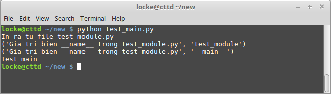
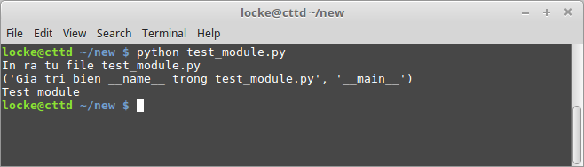

Ý nghĩa của if __name__ == '__main__': trong Python
Khi đọc một số các file code Python mẫu trên mạng, có thể bạn sẽ rất hay gặp dạng như sau:
# Các import và khai báo hàm
if __name == '__main__':
# Thực hiện hàm chínhNhư ta đã biết, Python là một ngôn ngữ thông dịch. Do đó các lệnh sẽ được thực hiện từ trên xuống dưới. Kể cả khi chúng ta import một module từ file nào đó thì các lệnh trong file cũng được thực hiện luôn.
Hãy tạo file test_module.py nội dung như sau:
print("In ra tu file test_module.py")Sau đó tạo file test_main.py có nội dung như sau:
import test_moduleNếu chúng ta chạy file test_main.py thì dòng chữ "In ra tu file test_module.py" cũng được in ra.
python test_main.py
Trước khi chạy những dòng code của module nào đó, Python Interpreter sẽ
định nghĩa một số biến đặc biệt, trong đó có biến __name__.
Thường biến này sẽ có giá trị bằng tên của module. Tuy nhiên nếu biến __name__
mà nằm trong file mà ta chạy trực tiếp bằng lệnh Python thì sẽ có giá
trị là xâu __main__.
Hãy chỉnh lại các file code như sau:
test_module.py:
print("In ra tu file test_module.py")
print('Gia tri bien __name__ trong test_module.py', __name__)
if __name__ == '__main__':
print('Test module')test_main.py:
import test_module
print('Gia tri bien __name__ trong test_module.py', __name__)
if __name__ == '__main__':
print('Test main')Bây giờ nếu chúng ta chạy file test_main.py thì sẽ không hiển thị dòng chữ "Test module" mà hiển thị như sau:
Nếu chúng ta chạy file test_module.py thì sẽ hiển thị như sau:
Bạn có thể download các file source ở đây.